class: center, middle <center><img src="images/ub.png" width="150"></center> # **ALGORÍSMICA** ## Algorismes per processar cadenes de caràcters Jordi Vitrià, Mireia Ribera .blue[jordi.vitria@ub.edu] | .blue[ribera@ub.edu] --- ## Processament de cadenes de caràcters Tots els llenguatges ens proporcionen una sèrie de funcions per processar *strings* o cadenes de caràcters, però cal ser molt conscient del cost d'aquestes funcions (o dels operadors del llenguatge) quan treballem amb texts molt grans. Per exemple, suposem que volem fer un programa que comprovi que tots els caràcters d'un *string* són únics, hi apareixen només una vegada: ```python def is_unique(input): char_seen = [] for char in input: if char in char_seen: return False char_seen.append(char) return True ``` Quina complexitat té aquest algorisme (en funció del nombre de caràcters `n` del text i del nombre `m` de caràcters diferents a l'string)? -- + Sabem que no pot ser menor que `O(n)`: al menys cal mirar tots els caràcters una vegada! --- ## Processament de cadenes de caràcters + El cost de l'operador `list.append()` és `O(1)`. + El "in" de la tercera línia tindrà un cost de `char_seen`. Per tant, per al primer char d'n s'executarà 1 vegada, pel segon 2, etc. Total: (`1 + 2 + 3 + 4 + 5 + 6 +...+m`). I això és una sèrie que podem calcular (sumatori d'una sèrie aritmètica): $$ \sum_{i = 1}^m i = \frac{m(m+1)}{2} \approx m^2 $$ La primera iteració i el "in" combinats, tenen una complexitat `O(m^2)`. Per tant, el cost total de l'algorisme, en el pitjor dels casos, és `O(m^2)`, o `O(n^2)` en el cas que `n` i `m` siguin semblants, és a dir que tots els caràcters siguin diferents. > El *pitjor dels casos* és aquell on tenim un *string* molt gran format per caràcters no repetits. --- ## Processament de cadenes de caràcters De fet, el que fem és un recorregut sobre char_seen, que podem explicitar amb un for: ```python def is_unique(input): char_seen = [] for char in input: for c in char_seen: if char == c: return False char_seen.append(char) return True ``` Això té clarament una complexitat `O(m^2)`. Notebook a Colab: [](https://colab.research.google.com/github/algorismica2020/algorismica2020.github.io/blob/master/notebookscolab/ComplexitatText.ipynb) Es pot fer millor? -- La resposta és positiva, però cal aplicar algorismes de *hashing*, un tema que es veu més endavant. --- ## Cerca de cadenes de caràcters Són algorismes crítics en moltes aplicacions importants de la informàtica: + Editors de text (cerca, ortografia, etc.). + Bioinformàtica. + Cercadors d’Internet. + Bases de dades. + Compressió. + Antivirus. + Etc. --- ## Cerca de cadenes de caràcters Considerem el següent problema: > Tenim un string *P* de `m` caràcters (el que volem trobar) i un string *T* de `n` caràcters, `n > m` dins el qual buscar. Aquests strings se solen anomenar **P**atró de cerca i **T**ext on buscar. Per exemple: `P: 001011` `T: 10010101101001100101111010` -- `P: happy` `T: It is never too late to have a happy childhood.` -- `P: GATTCAC` `T: ATCGGATATCCGGAAACTGGTAGCGTGTAGGAGGTAGCCTGGAAG` --- ## Cerca de cadenes de caràcters: versió ingènua `P: 001011` `T: 10010101101001100101111010` En una primera instància, podríem comparar tot l'string amb cada possible posició, però fàcilment podem millorar-ho... <center>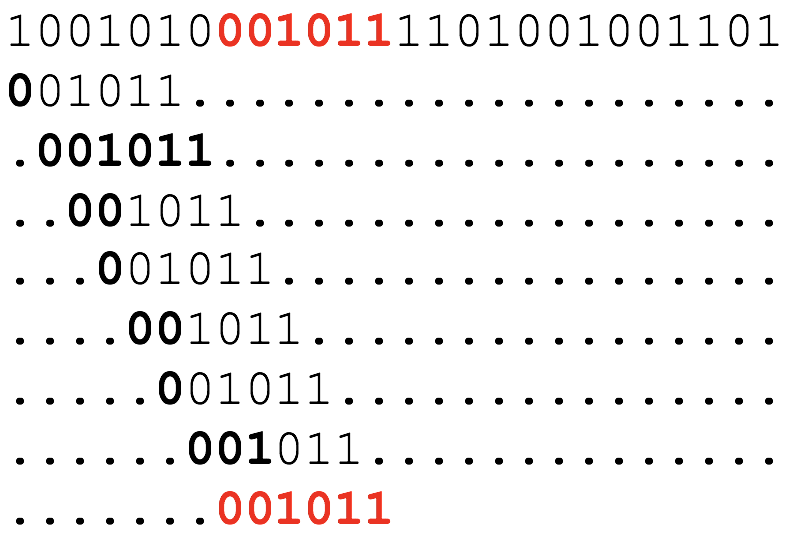</center> --- ## Cerca de cadenes de caràcters: versió ingènua ### Algorisme de força bruta: + Alineem el patró al principi del text. + Ens movem d’esquerra a dreta, comparant cada caràcter del patró amb el caràcter corresponent del text fins que tots els caràcters fan correspondència o trobem una diferència. + Mentre hi hagi diferències i no haguem recorregut tot el text, realiniem una posició més a la dreta i repetim el pas 2. -- ```python def BFStringMatching(t,p): m=len(p) n=len(t) for i in range(0,n-m+1): #i és la posició inicial del patró j=0 while j < m and p[j]==t[i+j]: j=j+1 #j són els caràcters que coincideixen if j == m: return i return -1 ``` --- ## Cerca de cadenes de caràcters: versió ingènua La complexitat de l’algorisme es pot analitzar en tres situacions: + En moltes ocasions, fem una comparació i movem. Aquest és el **millor cas**, i la complexitat si per tots els moviments féssim això seria `O(n)`. Aquest seria el cas, per exemple, de tenir una patró que comença per una lletra que no apareix al text. + En d’altres, fem totes les comparacions. Aquest és el **pitjor cas**, i la complexitat, si per tots els moviments féssim això, seria `O(n*m)`. + En un cas real, amb llenguatge natural, la **complexitat mitja** d'aquest algorisme s’acosta a `O(n+m)=O(n)` (l'única manera de calcular aquesta complexitat és de forma empírica: fent experiments). -- Hi ha algorismes (com l'algorisme de **Boyer-Moore**) que són lleugerament més òptims que la cerca ingènua, tot i que des del punt de vista de la complexitat són també `O(n)`. Una de les formes que tenim per reduir aquesta complexitat és pre-processar l’entrada de l’algorisme per optimitzar el seu funcionament. --- ## Cerca de cadenes de caràcters: versió avançada Per exemple, l’algorisme de Horspool (1980) (que és una versió millorada de l’algorisme de Boyer-Moore, 1977), que **pre-processa** el patró per analitzar el seu contingut, genera una taula que li doni informació útil a l’hora de fer desplaçaments i durant el recorregut fa els desplaçaments basant-se en aquesta taula. --- ## Cerca de cadenes de caràcters: versió avançada La primera observació és que començar a comparar text i patró **per la dreta** (i no per l'esquerra) ens proporciona avantatge a l’hora de fer els desplaçaments! <center><img src="images/horspool.png" width="520"></center> La majoria de vegades, falla el primer caràcter comparat. Si comencem per l'esquerra només saltem una posició. Per la dreta podem fer un salt més gran! --- --- ## Algorisme de Horspool Si tots els caràcters són iguals, hem acabat. Sinó, desplaçarem el patró cap a la dreta al màxim, sense risc de perdre una instància seva al text! Fins on? Això bàsicament depèn de `c`! <center>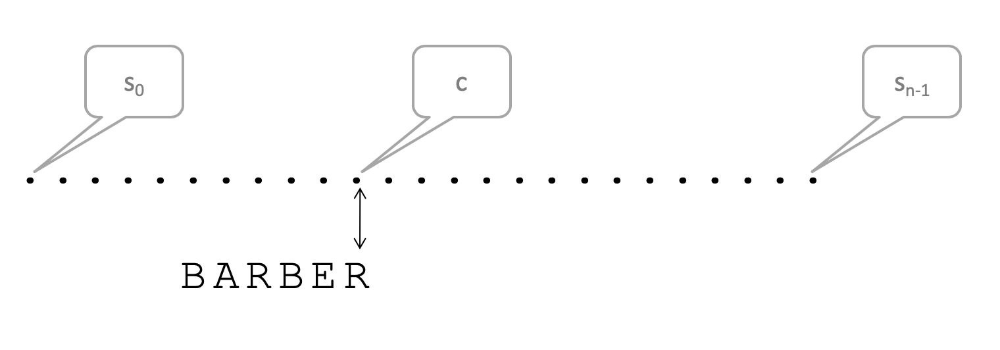</center> --- ## Algorisme de Horspool Quan falla la comparació entre patró i text, ens podem trobar amb varies situacions: + El caràcter `c` no està present al patró: <center><img src="images/horspool3.png" width="520"></center> --- ## Algorisme de Horspool + El caràcter `c` està present al patró i és segur desplaçar fins a la primera aparició del caràcter. <center><img src="images/horspool4.png" width="520"></center> --- ## Algorisme de Horspool En el cas que `c` no hagi fallat, però falla un altre caràcter més endavant: + El caràcter `c` no està present a la resta del patró, és segur desplaçar el patró m posicions. <center>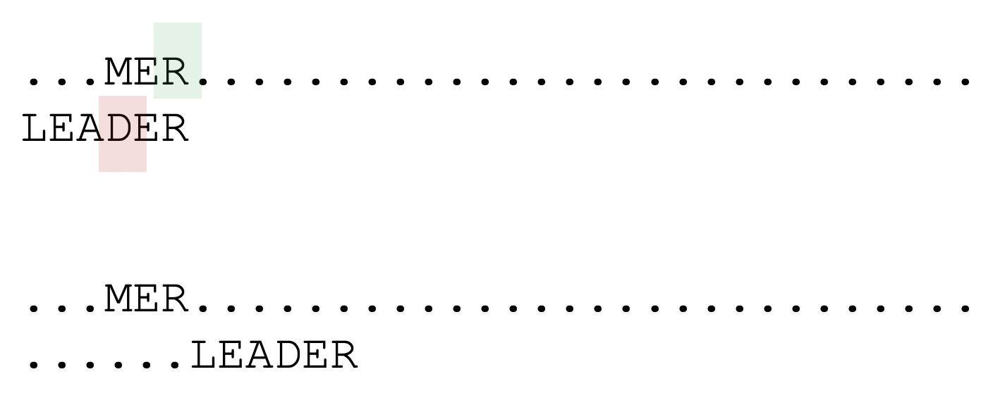</center> --- ## Algorisme de Horspool + El caràcter `c` està present a la resta del patró i podem desplaçar fins a la primera aparició del caràcter. <center>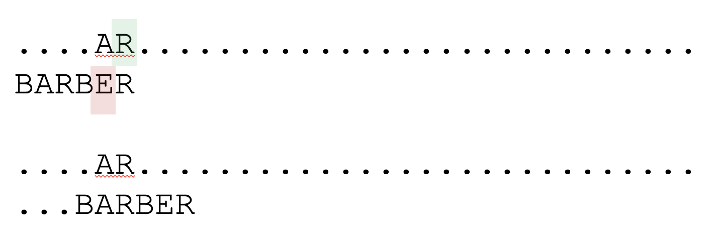</center> --- ## Algorisme de Horspool És evident que ens estalviem comparacions respecte a l’algorisme basat en força bruta, però també ho és que si hem de fer totes les comprovacions necessàries per saber en quin cas ens trobem en el moment que falla una comparació tampoc hi guanyem res! El que farem és pre-calcular una **taula de desplaçaments**. La taula ens donarà un desplaçament per cada possible lletra de l’alfabet. Els desplaçaments es poden pre-calcular, mirant el patró, amb aquesta fórmula: + Si `c` no està entre els primer `m-1` caràcters del patró, desplaçament = `m`. + En tots els altres casos, desplaçament = distància des de la primera aparició `c` (començant per la dreta) al patró. En el cas de `BAOBAB` tenim: <center>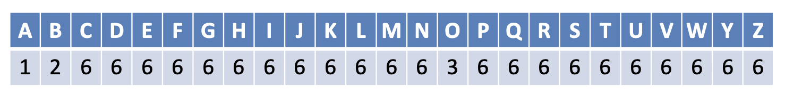</center> --- ## Algorisme de Horspool ```python def BoyerMooreHorspool(pattern, text): m = len(pattern) n = len(text) if m > n: return -1 skip = [] for k in range(256): skip.append(m) for k in range(m - 1): skip[ord(pattern[k])] = m - k - 1 skip = tuple(skip) k = m - 1 while k < n: j = m - 1; i = k while j >= 0 and text[i] == pattern[j]: j -= 1; i -= 1 if j == -1: return i + 1 k += skip[ord(text[k])] return -1 ``` Notebook a Colab: [](https://colab.research.google.com/github/algorismica2020/algorismica2020.github.io/blob/master/notebookscolab/Horspool.ipynb) --- ## Algorisme de Horspool <center>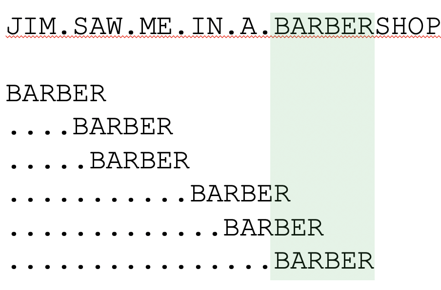</center> La **complexitat** en el pitjor cas és `O(nm)`. En el cas promig, `O(n)`, però tot i estar en la mateixa classe de complexitat, és més eficient que l’algorisme de força bruta. --- # Altres problemes La cerca no és l’únic problema interessant. Buscar la subcadena més gran en comú entre dos texts també ho és. O fer cerca aproximada.... -- El problema de la **cerca aproximada** és: donat un patró `P[1..m]` i un text `T[1..n]`, trobar la subcadena de `T` amb la distància d’edició mínima respecte a `P`. La **distància d’edició** és el nombre d’operacions primitives per convertir un string en un altre. <center>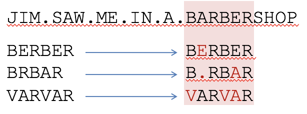</center> En el primer cas de l'exemple hem de fer una *edició* de la paraula `BERBER` per convertir-la en `BARBER`. En el segon en calen 2 i en el tercer cas en calen 3. --- ## Cerca aproximada de cadenes. Un algorisme basat en la força bruta **calcularia la distància d’edició de `P` a totes les subcadenes de `T`, i llavors escolliria la que té distància mínima**. Amb la denominació subcadenes ens referim a seqüències de caràcters *consecutius* que formen part de la cadena original. No confondre amb subseqüències. -- Com calculem totes les subcadenes d'un text? ```python a="hola" cont=0 for j in range(len(a)): for i in range(j+1,len(a)+1): cont=cont+1 print (cont,(a[j:i])) ``` Les subcadenes d'`hola` són `h`, `ho`, `hol`, `hola`, `o`, `ol`, `ola`, `l`, `la`, `a`. Si n és la longitud de la cadena, el nombre de subcadenes és $$ \sum_{i = 1}^n i = \frac{n(n+1)}{2} $$ que té una complexitat `O(n^2)`. --- ## Cerca aproximada de cadenes. Un algorisme basat en la força bruta per fer cerca aproximada de cadenes tindria la complexitat de creació de les subcadenes `O(n^2)` multiplicada per la complexitat del càlcul de la distància d'edició en cadascuna, que més endavant veurem que és d'`O(n*m)`. Per tant, una complexitat total de `O(n^3 * m)`. Hi ha algorismes més òptims per fer-ho? --- ## Càlcul de la distancia d'edició: Levenshtein Abans de veure com cercar un patró (curt) en un text (llarg), anem a veure com calcular la “distància” `d` entre dos strings (curts). > Quina és la distància entre `BARBER` i `BRBAR`? Això es fa amb l’algorisme de Levenshtein: > В.И. Левенштейн (1965). "Двоичные коды с исправлением выпадений, вставок и замещений символов". Доклады Академий Наук СCCP163 (4): 845–8. <center></center> .footnote[Traduït a l'anglès: Levenshtein VI (1966). “Binary codes capable of correcting deletions, insertions, and reversals". Soviet Physics Doklady 10: 707–10.] --- ## Levenshtein i distància d'edició: operacions d'edició Aquest algorisme (també anomenat *distància d’edició*) calcula el nombre mínim d’operacions d’edició que són necessàries per modificar una cadena `P` i obtenir-ne una altra `T`. Usualment, les operacions d’edició són: + **inserció** (Insertion) (p.e., canviar `cot` per `coat`), + **eliminació** (Deletion) (p.e., canviar `coat` per `cot `), i + **substitució** (p.e., canviar `coat` per `cost`). També es podria considerar la **transposició**: canviar `cost` per `cots`, però no ho farem. -- per exemple: + entre B**A**RBER i BERBER - una substitució + entre B**A**RB**E**R i BRBAR - una eliminació i una substitució + entre **VA**R**VA**R i BERBER - quatre substitucions --- ## Levenshtein i distància d'edició: matriu de distàncies Per fer-ho, va omplint una matriu *d* de manera que la posició `[i,j]` representa la **distància d’edició entre el prefix de `i` caràcters d’un patró i el prefix de `j` caràcters d’un text.**. Per exemple: <center>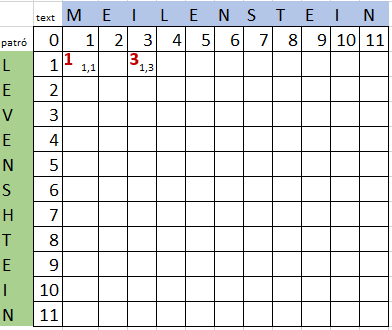</center> `d[1][1]=1`, canviar `L` per `M`, només és una substitució. `d[1][3]=3`, canviar `L` per `MEI`, és una substitució i dues insercions. --- ## Levenshtein i distància d'edició: inicialitzant la matriu La matriu té una fila i una columna `0`, que representa la cadena de caràcters buida. Alguns elements de la matriu tenen un valor molt simple de calcular. Els altres no tant... <center>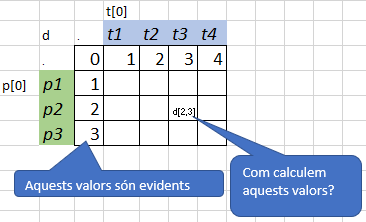</center> Quines operacions d'edició han donat com a resultat els valors posats? per ex. [3,0] o [0,3]? --- ## Levenshtein i distància d'edició: avançant en el patró i en el text Levenshtein va fer el següent raonament: + Suposem que volem calcular `d[i,j]`, per exemple `d[4,2]`, i que ja tenim una alineació òptima entre els prefixos `p[:i-1] = p[:3] = "LEV"` i `t[:j-1] = t[:1] = "M"`. Ara hem de veure què passa amb les següents lletres del patró i del text, `p[i-1] = p[3] = "E"` i `t[j-1] = t[1] = "E"` <center>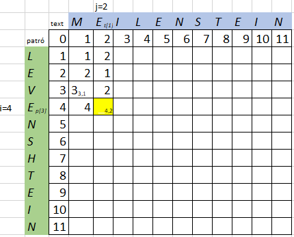</center> I només podem fer tres coses per aliniar-los! --- # Levenshtein i distància d'edició: Coincidència o Substitució 1) Fem correspondència entre `p[i-1]` i `t[j-1]`. + Si `p[i-1]=t[j-1]` llavors `d[i,j]=d[i-1,j-1]` (C, coincideixen). + Si no, substituim la lletra del patró per la del text i queda que `d[i,j]=d[i-1,j-1]+1` (S, substituim) <center>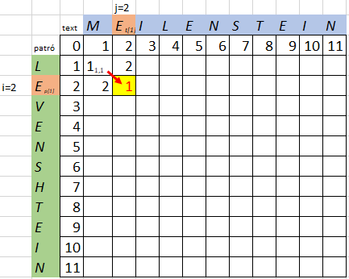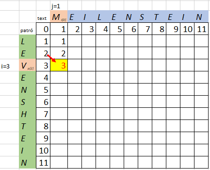</center> --- ## Levenshtein i distància d'edició: Deletion 2) Decidim que hi ha una lletra que no ens interessa al patró i l'esborrem (D). Deletion és equivalent a dir que no hem avançat en el text, i això es pot representar dient que `d[i,j]=d[i-1,j]+1` <center>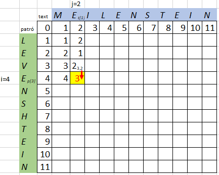</center> --- ## Levenshtein i distància d'edició: Insertion 3) Decidim que hi ha una lletra de més al text i l'inserim al patró (I). Insertion és equivalent a dir que no hem avançat en el patró, i això es pot representar dient que `d[i,j]=d[i,j-1]+1` <center>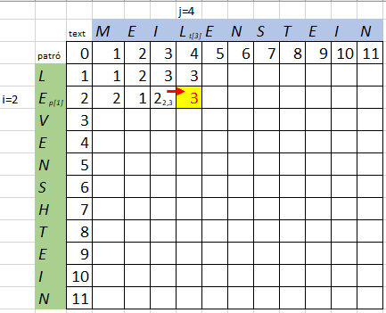</center> --- ## Levenshtein i distància d'edició: quina operació d'edició triem? > No hi ha cap més opció, atès que hem escollit treballar només amb aquests operadors d'edició. El següent punt del raonament de Levenshtein és: si hi ha tres possibilitats, **escollirem la més barata**! O el que és el mateix: `d[i,j]= min{d[i-1,j] + 1, d[i,j-1] + 1, d[i-1,j-1] + cost}` on `cost` és una variable que val `0` si `p[i-1]` i `t[j-1]` són iguals i `1` si són diferents. (En els exemples de les anteriors diapositives el moviment indicat era sempre el més barat.) --- ## Levenshtein i distància d'edició: càlcul recursiu? El càlcul dels valors de la matriu `d` es podria fer de manera recursiva (l'equació que defineix els seus valors és recursiva) a partir dels valors de la primera fila i columna, però això voldria dir que a cada crida recursiva passem tot l'objecte matriu, i això té un cost computacional massa elevat per a matrius grans! Ho implementarem de manera no recursiva, seguint la mateixa estratègia que vam fer servir per la seqüència de Fibonacci. --- ## Levenshtein i distància d'edició: càlcul seqüèncial El valors de la matriu `d` es poden calcular de manera seqüencial a partir dels valors de la primera fila i columna: `d[i,j]= min{d[i-1,j] + 1, d[i,j-1] + 1, d[i-1,j-1] + cost}` <center>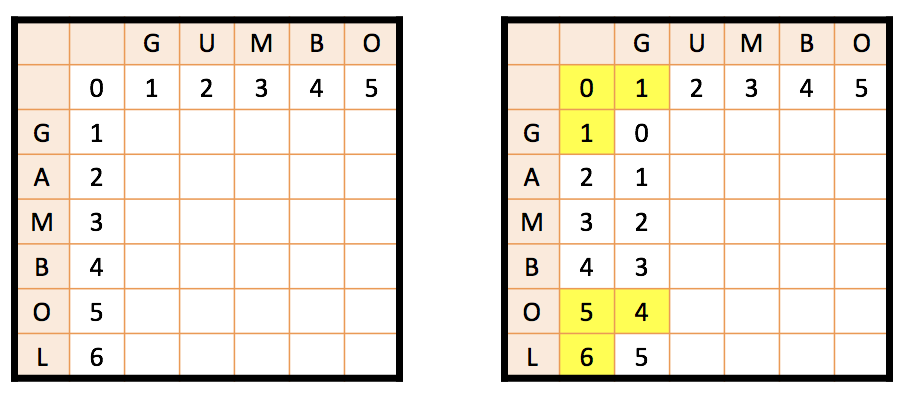</center> --- ## Levenshtein i distància d'edició: valor de les caselles de la matriu <center><img src="images/lev9.png" width="350"></center> El valor de la darrera posició de la matriu és la distància d'edició entre el patró i el text! De fet, el valor de cada casella és la distància d'edició entre les respectives subcadenes de patró i text. Per ex. `d[2,2] "1"`, és la distància entre `"GU"` i `"GA"`. --- ## Levenshtein i distancia d'edició: omplint la matriu La matriu es pot omplir seqüencialment amb aquest algorisme: ```python Per cada caràcter de p (i des de 1 fins m): Per cada caràcter de t (j des de 1 fins n): Si p[i-1] == t[j-1]: cost = 0 Si p[i-1] != t[j-1]: cost = 1 d[i,j] = mínim (d[i-1,j] + 1, d[i,j-1] + 1, d[i-1,j-1] + cost) ``` Això té una complexitat `O(m*n)` equivalent a calcular tots els elements de la matriu. On m és la llargada del patró i n la llarga del text i on habitualment n > m. --- ## Levenshtein i distancia d'edició: interpretant la matriu El nombre que queda a la **cantonada de baix a la dreta** de la matriu és la distància de Levenshtein, o d’edició, entre les dues paraules. Si volem saber les operacions d’edició efectuades, hem de buscar el **camí mínim entre els extrems de la matriu o simplement guardar a cada pas la decisió presa respecte a l’edició**. <center>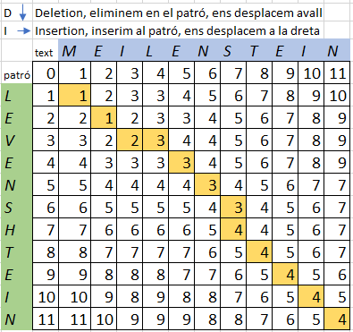</center> Les operacions d'edició que s'han fet han estat: **S** - C - **S** - **I** - C - C - C - **D** - C - C - C - C, és a dir quatre canvis --- ## Levenshtein i distancia d'edició: camins alternatius Pot haver-hi diversos possibles passos de cost mínim: <center>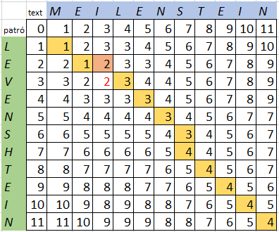</center> El camí alternatiu és: S - C - **I** - **S** - C - C - C - D - C - C - C - C Qualsevol d'ells és correcte. --- ## Levenshtein i distancia d'edició: un altre exemple <center>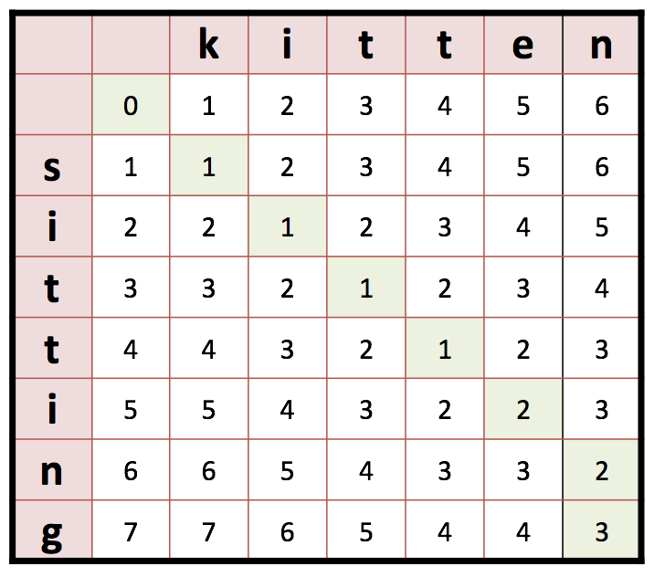</center> --- ## Levenshtein i distancia d'edició: algorisme ```python def levenshtein_distance(first, second): if len(first) > len(second): first, second = second, first if len(second) == 0: return len(first) first_length = len(first) + 1 second_length = len(second) + 1 distance_matrix = [[0] * second_length for x in range(first_length)] for i in range(first_length): distance_matrix[i][0] = i for j in range(second_length): distance_matrix[0][j] = j for i in range(1, first_length): for j in range(1, second_length): deletion = distance_matrix[i-1][j] + 1 insertion = distance_matrix[i][j-1] + 1 substitution = distance_matrix[i-1][j-1] if first[i-1] != second[j-1]: substitution += 1 distance_matrix[i][j] = min(insertion,deletion,substitution) return distance_matrix[first_length-1][second_length-1] ``` --- ## Levenshtein i distancia d'edició: algorisme comentat (1) ```python def levenshtein_distance(first, second): if len(first) > len(second): first, second = second, first # el primer sempre més curt if len(second) == 0: return len(first) first_length = len(first) + 1 second_length = len(second) + 1 distance_matrix = [[0] * second_length for x in range(first_length)] # posem la matriu a 0 ... ``` `distance_matrix = [[0] * second_length for x in range(first_length)]` és una **list comprehension** que es pot interpretar com: ```python distance_matrix = [] for x in range(first_length): distance_matrix.append([0] * second_length) ``` --- ## Levenshtein i distancia d'edició: algorisme comentat (2) ```python ... # valors inicials for i in range(first_length): distance_matrix[i][0] = i for j in range(second_length): distance_matrix[0][j] = j for i in range(1, first_length): # recorregut resta caselles for j in range(1, second_length): deletion = distance_matrix[i-1][j] + 1 insertion = distance_matrix[i][j-1] + 1 substitution = distance_matrix[i-1][j-1] if first[i-1] != second[j-1]: substitution += 1 # substitution val 0 o 1 distance_matrix[i][j] = min(insertion,deletion,substitution) return distance_matrix[first_length-1][second_length-1] ``` --- ## Cerca aproximada de cadenes Recordem que el nostre problema era: > Donat un patró `P[1..m]` i un text `T[1..n]`, trobar la subcadena de `T` amb la distància d’edició mínima respecte a `P`. Aquest càlcul es pot fer amb l’algorisme de Levenshtein. Només cal adonar-se que si a la matriu de Levenshtein omplim la primera fila amb zeros (equival a considerar que el cost d'inserir espais en blanc al davant del patró és nul) tindrem una petita variació que ens permetrà trobar les subcadenes de distància mínima! <center>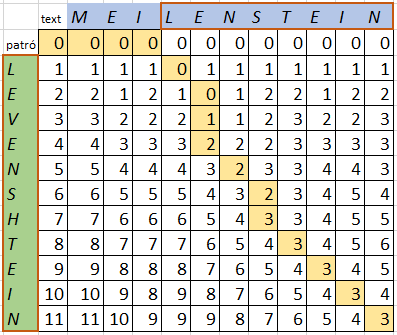</center> 3 desplaçaments a la dreta a cost zero + C - C - **D** - **D** - C - C - **D** - C - C - C - C - C --- ## Cerca aproximada de cadenes: un altre exemple El fet de que la primera fila tingui un cost 0, fa que a l'exemple trobem tres respostes a distància 1: GATA, GATAAG, i GAGAA; i una resposta a distància 0: GATAA <center>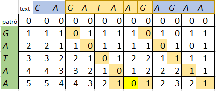</center> --- ## Camí enrera (backtracking) Per conèixer quina subcadena del text està a distància mínima, hem de refer el camí fet. + Identificar el valor mínim de la darrera fila de la matriu i guardar la posició j<sub>f</sub> d'aquest valor + Anar enrera en els moviments fins arribar a la fila 1 de la matriu. Guardar la posició j<sub>0</sub> d'aquesta valor + Fer slicing del text [j<sub>0</sub>-1:j<sub>f</sub>] <center>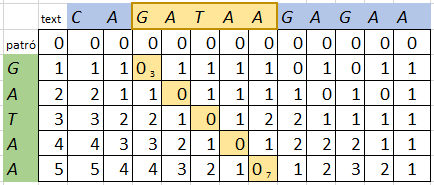</center> j<sub>f</sub> = 7; j<sub>0</sub> = 3; text[2:7] = "GATAA" --- ## Camí enrera (backtracking): matriu d'operacions d'edició Per anar enrera a la matriu, el que farem serà construir una segona matriu on guardarem tots els moviments fets. Apuntarem S per substitució, C per coincidència, D per Deletion, I per Insertion. <center>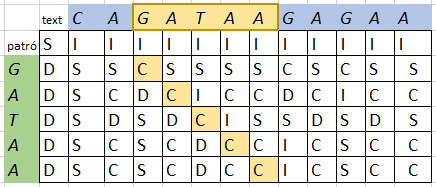</center> Un cop a la casella de valor mínim només haurem de desfer el camí segons el moviment de l'operació per identificar la subcadena. Per exemple: si l'operació és **S** ens mourem amunt i a l'esquerra; si l'operació és **D** ens mourem amunt.